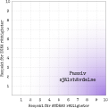

Passiv kommunikation
Definition
- Att du inte uttrycker dina ärliga känslor, tankar, behov och övertygelser. Det innebär att du därmed tillåter andra att kränka dina rättigheter. Det kan också betyda att du uttrycker dina tankar och känslor på ett ursäktande, självutplånande sätt – så att andra enkelt kan bortse från dem.
- Att du förminskar eller kränker dina egna rättigheter.
- Ibland även att du visar en subtil avsaknad av respekt för andra människors förmåga att klara av besvikelser, axla ansvar eller hantera sina egna problem.

Verbala kännetecken
- långa, virriga meningar
- tassande som katten kring het gröt
- trevande tal, fyllt av pauser
- frekvent harklande
- ursäktande utan anledning, i en mjuk och ostadig röst
- användande av meningar som ”om det inte vore till för mycket besvär …”
- många fyllnadsord som ”kanske”, ”hmm”, ”du vet”
- ofta enformig och monoton röst
- ibland gnällig eller retande ton
- överdrivet varm eller överdrivet mjuk röst
- ofta lämnas resonemang oavslutade
- ideliga rättfärdiganden, exempelvis ”jag brukar normalt inte säga någonting”
- ursäkter, exempelvis ”jag är hemskt ledsen att jag stör”
- upphävande av det egna talet, exempelvis ”det är bara min åsikt” eller ”jag kan ha fel”
- själv-avfärdande, som ”det är inte viktigt” eller ”det spelar egentligen ingen roll”
- själv-nedsättande tal, som ”jag är hopplös …” eller ”du känner mig …”
Icke-verbala kännetecken
- undviker ögonkontakt
- tittar ned
- ibland hopsjunken hållning
- vridandes på händerna
- uttrycker ilska eller tar emot kritik med ”spökleende”
- skakande käkar
- bitande i läpparna
Kognitiv stil (tänkande)
- ”Jag räknas inte”
- ”Mina känslor, behov och tankar är mindre viktiga än dina”
- ”Andra personer kommer att tänka illa om mig eller att inte tycka om mig”
- ”Om jag säger nej kan någon blir upprörd, om det händer är det mitt fel”
Fördelar
- Du får uppskattning för att vara en osjälvisk, hygglig person
- Du får sällan skulden när något går fel eftersom du sällan tar initiativ
- Andra skyddar och tar hand om dig
- Du undviker, skjuter upp eller gömmer konflikter, för att kortsiktigt minska ångest och obehag
Kostnader
- Du kan ha en benägenhet att bygga upp stress och ilska som kan explodera på ett väldigt aggressivt sätt
- Andra personer kan ofta komma att ställa orimliga krav på dig
- Du kan fastna i relationer som inte är konstruktiva och som är svåra att ändra
- Du begränsar självbilden till att passa andras bild av dig som en älskvärd person
- Samtidigt som du trycker undan ilska och frustration minskar det benägenheten att känna positiva känslor
- Du kan få försämrad självkänsla